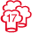

BECKER´S Hotel & Restaurant
Olewiger Straße 206
D-54295 Trier
- TEL: +49 (0) 651 938080
- FAX: +49 (0) 651 9380888
- eMail: rezeption@beckers-trier.de
- www.beckers-trier.de
Termine und Preise 2013
- Sa./So. 18./19. Mai (Für Einsteiger)
- Sa./So. 2./3. Oktober (Für Einsteiger)
Wein-Sensorik Grundlagen für Einsteiger - "Geschmacksbilder erschließen, beschreiben und bewerten."
Weinseminarpaket mit Premium-Menü für Feinschmecker: 279,- € je Teilnehmer
Nur Premium-Menü mit Weinbegleitung (ohne Kurs) für eine Begleitperson: 213,55 € pro Person
Weinseminar mit Premium-Menü zum Paketpreis
- Kursleiter Laurentius Kollmann
- 18 internationale Weine aus Deutschland, Italien und Frankreich
- Klassik Vier-Gang-Degustationsmenü mit korrespondierenden Weinen serviert in der Weinbar.
- Sechs Stunden Kurs: Zwei Einheiten zu je drei Stunden.
- Weißbrot und Mineralwasser im Kurs und zum Menü.
- Kursskript
Exklusiv
Die Teilnehmerzahl ist auf 16 begrenzt.
Allgemeine Geschäftsbedingungen (AGB)
Bitte AGB sorgfältig durchlesen
Organisation
Für das Weinseminar ist Ihr Ansprechpartner Laurentius Kollmann.
"Sterne-Koch" Wolfgang Becker
Premium-Menüs werden in solchen Häusern zubereitet, die regelmäßig Spitzenplätze in einschlägigen Restaurantführern (Gault Millau, Guide Michelin, Varta-Führer) belegen.
Beispiel: Sanft geschmorte Schweinsbrust mit Haselnuss-Schaum und Kaviar. Frikassee vom Steinbutt mit Frühlingsmorcheln und Spargel (Saison). Variation von der Mokkabohne sind typische Kreationen von Wolfgang Becker.
Geschmackserlebnis auf höchstem Niveau
Lernen Sie, wie Sie Speise und Wein kreativ verbinden können. Gute Weine und gute Speisen werten einander auf. Erleben Sie Geschmack auf höchstem Niveau.
Ich serviere zu jedem Gang zwei begleitende Weine und begründe die Weinauswahl ausführlich. Genießen Sie das Zusammenspiel der Aromen und Geschmackskomponenten. Diskutieren Sie das Ergebnis und lernen Sie aus der konkreten Erfahrung im Seminar.
Guide Michelin
Eine hervorragende Küche, verdient einen Umweg.
Gault Millau

Höchste Kreativität und Qualität, bestmögliche Zubereitung
VARTA FÜHRER
Das Programm für Feinschmecker
Samstag/Sonntag - 2 Tages Seminar
| PROGRAMM | SAMSTAG | SONNTAG |
|---|---|---|
| 10 - 13 Uhr | Kursblock II (Weißwein) | |
| 13 Uhr | Ende der Veranstaltung | |
| 14 - 17 Uhr | Kursblock I (Rotwein) | |
| 19 Uhr | Degustationsmenü mit korrespondierenden Weinen |
Weinseminar-Inhalt
-

Umgang mit Wein
Der richtige Umgang mit Wein
- Trinktemperatur
- Weinverschlüsse
- Korkenzieher
- Weingläser
- Dekantieren
- Flaschenformate
-

Flaschenetikett
Die wichtigsten Einflussfaktoren auf das Geschmacksbild verstehen und mit den Angaben auf dem Flaschenetikett vergleichen
- Erzeuger
- Herkunft
- Rebsorte
- Zustand der gelesenen Trauben
- Vergärung der Weine und Ausbau
- Flaschenreife
-

Wein degustieren
Flüchtigen Empfindungen mit Hilfe von Degustationsnotizen formulieren und festhalten
- Sehen
- Riechen
- Schmecken
Stimmen zum Weinseminar in Trier
"Sehr viel Neues erfahren.", Fabio Mastrangelo
"Sehr informative Veranstaltung in toller Atmosphäre.", Alexander Backes
"Viele praktische Hinweise, Fragen wurden sofort und kompetent beantwortet.", Tanja Seel
„Viele neue technische Hintergründe.“, Patrik Hartmann.
„Tolle Location, tolles Essen, tolle Weine.“, Martina Wilk.
„Es war einfach gut.“, Uschi Beul.
„Gutes Thema in schöner Atmosphäre.“, Philipp Heigl.
„Sehr guter praxisnaher Überblick in tollem Ambiente.“, Ilka Heigl.
„Alle Fragen wurden sehr gut beantwortet und greifbar gemacht.“, Axel Otto.
Galerie
Weinseminar in "Becker's Weinbar"
Becker's in Trier
Trier und die Mosel
Lageplan Becker's
Größere Kartenansicht